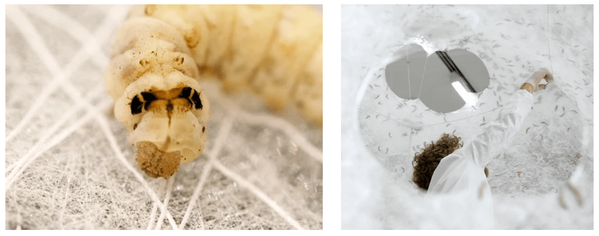

Silkworm architecture
Tommy :I'm a big fan of the series Abstract on Netflix. Whenever I need a reminder that anything is possible I dip in to this wonderful series. I was especially inspired by the episode on Bio-architecture. Researchers at MIT Media Lab led by Neri Oxman created domes from silk fibres created by live silkworms. Traditionally during the silk gathering process, the silkworm is sacrificed to harvest it's silk. However this method allows the silkworms to weave themselves. An army of natural constructors. Working with nature to create architecture.
This got me thinking about light diffusion. I've been searching for new ways to diffuse light aside from Opal Acrylic or any other plastic based material. Paper works well and recycled paper offers interesting organic diffusion patterns. However it's not very robust. Imagine lamp shades woven by silkworms. Something to experiment with for sure.
Nature is incredibly sophisticated - take funghi for example and their mycelial networks. We have so much to learn and I'm confident that the answer to our environmental problems lie within the environment itself.